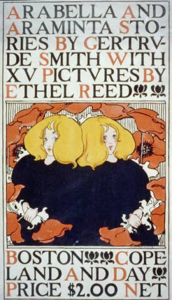

Arabella y Araminta Stories de Gertrude Smith .1895
Es un cartel ilustrado vintage, probablemente para un libro, con influencias del Art Nouveau. Presenta a una mujer con cabello rubio fluyendo, rodeada por flores grandes y estilizadas. La mujer está representada de manera simplificada y elegante, con líneas suaves y curvas. Los colores son limitados pero armoniosos, con tonos de amarillo, naranja y negro predominantes. Hay texto prominente en la parte superior e inferior del cartel que proporciona información sobre un libro o evento.
